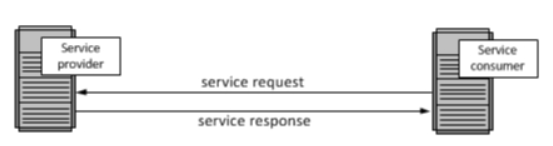
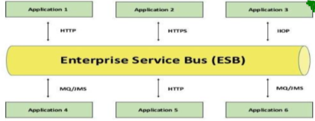

Introduction to EAI,SOA,ESB, Integration Pattern :
DAY-1 (Part-1)
Let's get started.
EAI
Enterprise application integration is an integration framework composed of a collection of technologies and services which form a middleware or "middleware framework" to enable integration of systems and applications across an enterprise.
It is the process of linking applications within a single organization in order to simplify and automatebusiness processes to the greatest extent possible, while at the same time avoiding having to make sweeping changes to the existing applications or data structures.
It is to ensure that the business uses the information consistently and that changes to core business data made by one application are correctly reflected in others.
SOA
Service-oriented architecture (SOA) is a style of software design where services are provided to the other components by application components, through a communication protocol over a network.
The basic principles of service-oriented architecture are independent of vendors, products and technologies. A service is a discrete unit of functionality that can be accessed remotely and acted upon and updated independently.
Features of SOA:
1. Is a logical representation of a repeatable business activity thathas a specified outcome (e.g., check customer credit, provide weather data, consolidate drilling reports) .
2. Is self-contained .
3. May be composed of other services .
4. Is a “black box” to consumers of the service

ESB
An enterprise service bus (ESB) implements a communication system between mutually interacting software applications in a service- oriented architecture (SOA).
It represents a software architecture for distributed computing, and is a special variant of the more general client- server model, wherein any application may behave as server or client.
ESB promotes agility and flexibility with regard to high-level protocol communication between applications.
